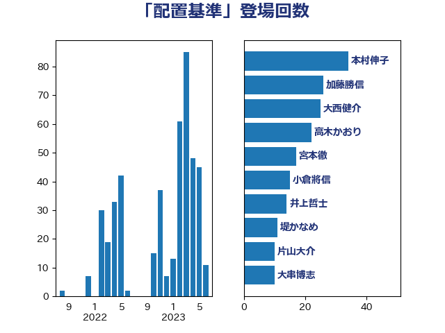

単語「配置基準」

| 本村伸子 | 日本共産党 | 34 回 |
| 加藤勝信 | 自由民主党 | 26 回 |
| 大西健介 | 立憲民主党 | 25 回 |
| 高木かおり | 日本維新の会 | 22 回 |
| 宮本徹 | 日本共産党 | 17 回 |
| 小倉將信 | 自由民主党 | 15 回 |
| 井上哲士 | 日本共産党 | 14 回 |
| 堤かなめ | 立憲民主党 | 11 回 |
| 片山大介 | 日本維新の会 | 10 回 |
| 大串博志 | 立憲民主党 | 10 回 |
| 倉林明子 | 日本共産党 | 10 回 |
| 後藤茂之 | 自由民主党 | 9 回 |
| 伊藤岳 | 日本共産党 | 9 回 |
| 西村智奈美 | 立憲民主党 | 8 回 |
| 岸田文雄 | 自由民主党 | 8 回 |
| 伊波洋一 | 無所属 | 8 回 |
| 野田聖子 | 自由民主党 | 7 回 |
| 早稲田ゆき | 立憲民主党 | 7 回 |
| 田村智子 | 日本共産党 | 6 回 |
| 小沢雅仁 | 立憲民主党 | 6 回 |
| 小池晃 | 日本共産党 | 6 回 |
| 吉田久美子 | 公明党 | 6 回 |
| 佐藤英道 | 公明党 | 6 回 |
| 緑川貴士 | 立憲民主党 | 5 回 |
| 田中英之 | 自由民主党 | 5 回 |
| 塩川鉄也 | 日本共産党 | 5 回 |
| 高木陽介 | 公明党 | 4 回 |
| 永岡桂子 | 自由民主党 | 4 回 |
| 松野明美 | 日本維新の会 | 4 回 |
| 末次精一 | 立憲民主党 | 4 回 |
| 打越さく良 | 立憲民主党 | 4 回 |
| 和田義明 | 自由民主党 | 4 回 |
| 吉良よし子 | 日本共産党 | 4 回 |
| 吉田とも代 | 日本維新の会 | 4 回 |
| 伊藤孝恵 | 国民民主党 | 4 回 |
| 赤池誠章 | 自由民主党 | 3 回 |
| 福島みずほ | 社会民主党 | 3 回 |
| 水野素子 | 立憲民主党 | 3 回 |
| 広瀬めぐみ | 自由民主党 | 3 回 |
| 山井和則 | 立憲民主党 | 3 回 |
| 太栄志 | 立憲民主党 | 3 回 |
| 天畠大輔 | れいわ新選組 | 3 回 |
| 加藤鮎子 | 自由民主党 | 3 回 |
| 一谷勇一郎 | 日本維新の会 | 3 回 |
| 高橋千鶴子 | 日本共産党 | 2 回 |
| 高木真理 | 立憲民主党 | 2 回 |
| 長友慎治 | 国民民主党 | 2 回 |
| 田島麻衣子 | 立憲民主党 | 2 回 |
| 松本剛明 | 自由民主党 | 2 回 |
| 本田顕子 | 自由民主党 | 2 回 |
| 岸真紀子 | 立憲民主党 | 2 回 |
| 山田勝彦 | 立憲民主党 | 2 回 |
| 宮本岳志 | 日本共産党 | 2 回 |
| 堀場幸子 | 日本維新の会 | 2 回 |
| 勝部賢志 | 立憲民主党 | 2 回 |
| 長妻昭 | 立憲民主党 | 1 回 |
| 野間健 | 立憲民主党 | 1 回 |
| 菊田真紀子 | 立憲民主党 | 1 回 |
| 芳賀道也 | 国民民主党 | 1 回 |
| 羽田次郎 | 立憲民主党 | 1 回 |
| 羽生田俊 | 自由民主党 | 1 回 |
| 田村貴昭 | 日本共産党 | 1 回 |
| 田中健 | 国民民主党 | 1 回 |
| 牧原秀樹 | 自由民主党 | 1 回 |
| 湯原俊二 | 立憲民主党 | 1 回 |
| 浅野哲 | 国民民主党 | 1 回 |
| 橋本岳 | 自由民主党 | 1 回 |
| 森田俊和 | 立憲民主党 | 1 回 |
| 柚木道義 | 立憲民主党 | 1 回 |
| 杉尾秀哉 | 立憲民主党 | 1 回 |
| 末松信介 | 自由民主党 | 1 回 |
| 平木大作 | 公明党 | 1 回 |
| 山谷えり子 | 自由民主党 | 1 回 |
| 山添拓 | 日本共産党 | 1 回 |
| 山本香苗 | 公明党 | 1 回 |
| 山口那津男 | 公明党 | 1 回 |
| 宮路拓馬 | 自由民主党 | 1 回 |
| 大塚耕平 | 国民民主党 | 1 回 |
| 友納理緒 | 自由民主党 | 1 回 |
| 佐々木さやか | 公明党 | 1 回 |
| 伊藤孝江 | 公明党 | 1 回 |
| 伊佐進一 | 公明党 | 1 回 |